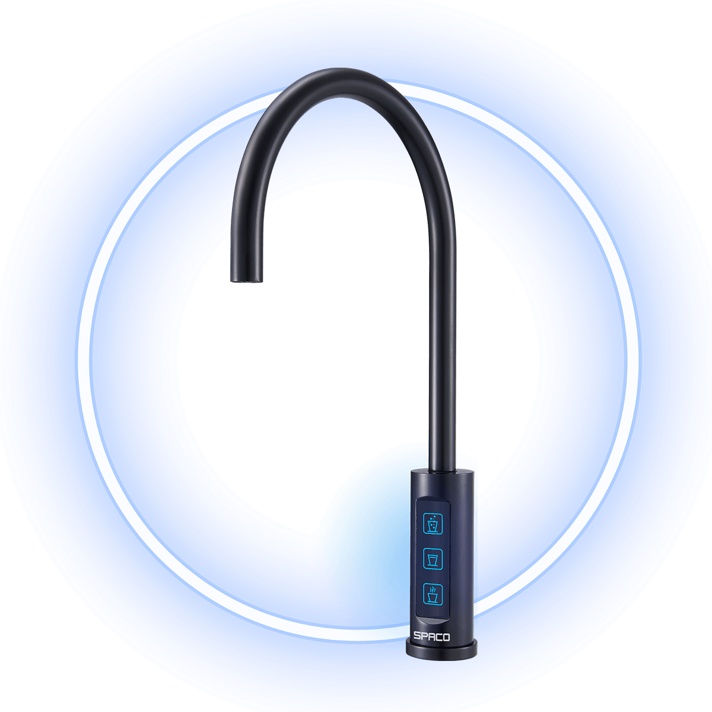

SPACO 觸控櫥下型-氣泡水冰溫熱飲水機 X-3 Pro


商品內容
SPACO X-3 Pro主機 X 1
SPACO X-3 Pro龍頭 X 1
氣泡鋼瓶2L X 1
商品描述
SPACO 觸控櫥下型-氣泡水冰溫熱飲水機 X-3 Pro
THE TASTE OF GALAXIES
頂級居家·吧檯氣泡水機 歐美品味人士熱銷首選
品味歐系生活的奢華飲水學
3-IN-ONE觸控全自動設計
輕按一鍵，享受冰氣泡水、常溫水、熱水
・最經濟的選擇，健康汽水DIY自己做
・一支氣瓶=400瓶/500ml汽水
・每1公升氣泡水・內含有5.8g符合美國FDA衛生標準的食品級二氧化碳氣體
・一機滿足所有人的健康飲水需求!
・適合家庭、餐廳、酒吧、招待會所、辦公空間等
・讓您在家就像住飯店，頂級氣泡水隨時款待!
【保養及維護】
建議使用2年以上，需回原廠進行保養維護。未使用靜置1周以上，使用前請先排放水10-15分鐘，若仍有狀況需回原廠進行保養維護，靜置一個月以上可另行預約客服0800-090-881到府服務管線檢查。